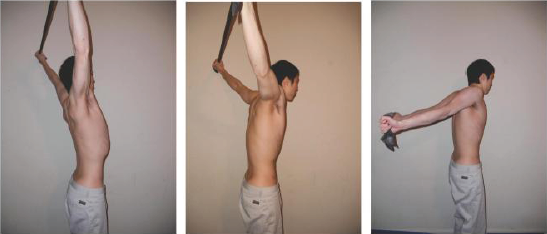

Я потратил немало времени в главах 1 и 4, рассказывая, что плечо является основным и самым
подвижным суставом верхней части тела. Это означает повышенный потенциал травмы плеча. Поэтому
мы должны о нем заботиться.
Чтобы компенсировать вертикальные подтягивания и жим, я для баланса практикую Манна и
горизонтальные подтягивания. Но этого не всегда достаточно, чтобы предотвратить проблемы с
плечами, поэтому я и написал этот раздел.
Среди изолирующих упражнений, которые очень хорошо развивают силу задней части плеч и
исправляют дисбалансы, выделяется комплекс LYTP. LYTP задействует ромбовидные, средние и
нижние трапеции, задние лопаточные мышцы и другие более глубокие структуры задней части,
которыми, обычно, пренебрегают. Кстати, проработка нижней трапеции (в Y-движении) весьма
полезна в наращивании силы и мускулатуры для силовых выходов в стойку на прямых руках.
Эти упражнения выполняются лежа на скамье. Их можно выполнять как без дополнительных весов,
так и с гантелями или импровизированными отягощениями.
Движение L (также называемое I-движением) заключается в подъеме прямой руки из положения виса
в направлении заднего кармана. Это специальное упражнение на проработку задней дельты. Следите
за тем, чтобы лопатка не смещалась вверх в направлении уха в качестве обычной компенсации
такого движения.
Движение T нагружает среднюю трапецию и ромбовидную мышцу. Поднимите прямую руку
горизонтально в сторону ладонью вниз. При выполнении одновременно обеими руками тело принимает
форму буквы Т. Сконцентрируйтесь на отведении руки при подъеме как можно дальше от туловища, а
затем втяните лопатку. Если ладонь обращена вниз, то больше нагружаются ромбовидные мышцы, а
если поднять большой палец вверх, то больше нагрузятся средние трапеции.
Движение Y нацелено на нижнюю часть трапеции. Для выполнения упражнения поднимите руку под
углом 45 градусов от линии подъема рук прямо над головой, так что если поднять две руки, то
получится форма буквы Y, как в приветственном жесте стоя. Волокна нижней части трапециевидной
мышцы ориентированы именно в этой плоскости, а не в направлении прямо над головой. Большой
палец должен смотреть вверх. Сосредоточьтесь на отведении руки при подъеме как можно дальше от
туловища, прежде чем втянуть лопатку в направлении поясницы.
Движение P выполняется из положения лежа на животе на полу. Изобразите стрелу с помощью рук и
туловища (стержень стрелы). Затем согните руки в локтях почти до упора. Руки изобразят форму
буквы W. Теперь попробуйте повернуть ладони так, чтобы они смотрели назад. Этот активирует
внешние вращатели плеч и большинство мышц вдоль лопаток.
У большинства людей есть ограничения в грудных мышцах, широчайших мышцах спины, большой
круглой мышце и других приводящих мышцах плеча в отношении положения рук над головой в стойке
на руках и гиперэкстензии в манне. Основная часть работы над подвижностью и гибкостью будет
направлена на проработку подвижности в этих плоскостях. Для следующих упражнений очень
пригодится эластичная лента.
Лопаточные отжимания хороши для проработки передней зубчатой мышцы. Они полезны, если плечи
не могут оставаться расправленными во время удержания планки. Для выполнения упражнения
примите упор лежа прямым телом. Позвольте плечам опуститься, а лопаткам выпирать из спины.
Затем оттолкните руки от туловища, не сгибая их. Это напрямую затронет передние зубчатые мышцы
и поможет привести плечи в правильное расправленное положение для планки.
Скольжение лопаток вдоль стены — отличный инструмент мобилизации тканей с помощью втягивания
лопаток в сочетании с их подъемом и расслаблением. Для этого упражнения встаньте спиной к
стене. Согните локти, изобразив руками букву W. Теперь, прижав к стене нижнюю часть спины,
плечи и руки, поднимите руки вверх и далее над головой. Это потребует сильно втянуть лопатки,
а затем расслабить их во время подъема, что улучшает их подвижность.
Выворот плеч с помощью ленты также хорошо помогает. Удерживая ленту поднимите руки над
головой и проверните их назад. Это поможет растянуть всю переднюю часть плеча и плечевую
капсулу.

Из пассивных упражнений мне нравятся немецкие висы для гиперэкстензии плеча. Так же хорошо
работает использование приподнятой поверхности с вытянутыми назад руками, которые удерживают
ленту.
В качестве пассивного эквивалента скольжения вдоль стены мне нравятся обратные скольжения с
лентой. Поднимите руки с натянутой на ширине плеч лентой. Сгибайте руки, как при скольжении
вдоль стены, так, чтобы лента скользила по спине, пока локти не выпрямятся. Активное движение
и вращение с экстензией грудного отдела позвоночника в этом упражнении очень хорошо
растягивают и мобилизуют ткани. Это одно из моих любимых упражнений на растяжку передней части
грудной клетки и на втягивание лопаток, но оно может оказаться тяжелым для запястий в момент
растягивания ленты с разведенными в стороны руками.
В эту же копилку — поднимите руки с лентой над головой и разведите их в стороны до
перпендикуляра туловищу. Во время выполнения втяните лопатки и напрягите плечевые мышцы. Это
хорошая техника, которая позволяет ощутить правильное сомкнутое положение плеч и помогает
разогреть плечи перед тренировкой.
Еще одно хорошее упражнение — вис на перекладине нижним хватом. Особый плюс в том, что плечо
развернуто наружу, а это защищает его от импинджмента. Также можно висеть на перекладине на
одной руке, если плечо выдерживает.
Кроме того, широчайшие вместе с грудной клеткой являются внутренними ротаторами плеча, и вис
в этом положении хорошо их растягивает. Гравитацию в этом упражнении можно сочетать с ПНФ,
когда вы пожимаете плечами и удерживаете это положение 5-15 секунд, а затем расслабляетесь,
что еще больше растягивает мышцы.
В промежутках между проработкой подвижности расслабляйте мышц груди и широчайшие с помощью
массажа валиком, мячами для баскетбола, лакросса или тенниса.